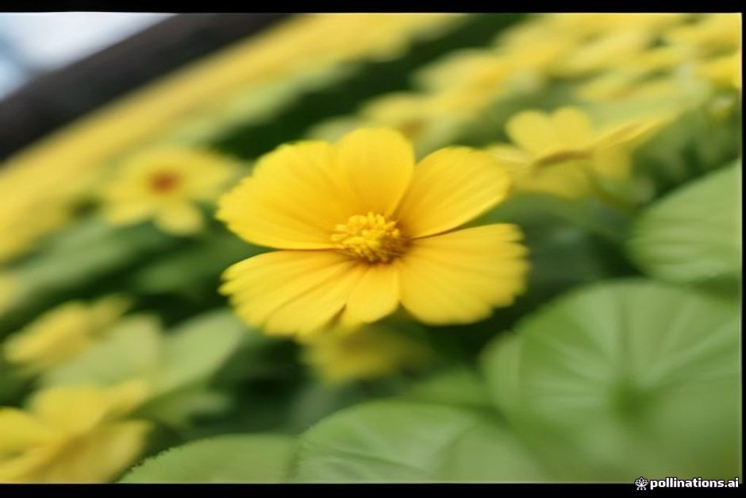

Marzo, abril y mayo son los meses en los que Madeira se gana a pulso su apodo de "Isla de la Eterna Primavera": las laderas se llenan de jacarandás y agapantos, Funchal monta todo un festival en torno a las flores, y las multitudes todavía no han llegado. Esto es lo que trae realmente la estación, mes a mes.
¿Hace calor en Madeira en primavera?
Sí, aunque es la más suave de las estaciones de la isla, más que una estación realmente calurosa. Las máximas diurnas en Funchal rondan los 19–20°C en marzo y abril, y suben hasta unos 21–22°C a finales de mayo, con noches que raramente bajan mucho de 14°C. Como Madeira flota en el Atlántico frente al norte de África, su primavera no se comporta como una primavera europea: no hay un deshielo repentino, solo una subida lenta y constante desde una base invernal ya suave. Lleva capas de ropa en lugar de un abrigo grueso; una tarde soleada de marzo en el paseo marítimo de Funchal puede sentirse casi calurosa, mientras que esa misma mañana en la montaña pide un jersey.
¿Está el mar lo bastante templado para bañarse en Madeira en primavera?
Solo un poco, y va mejorando a medida que avanza la estación. El Atlántico en torno a Madeira es lo que más tarda en calentarse de toda la isla, así que marzo tiene en realidad el mar más frío del año, en torno a los 18°C — más frío incluso que en pleno invierno, porque el océano todavía está perdiendo el calor acumulado en los meses anteriores. Abril sube ligeramente hasta unos 19°C, y a finales de mayo ronda ya los 20°C, entrando en un terreno propiamente agradable. Se puede nadar durante toda la estación si estás acostumbrado a un baño vigorizante, pero la primavera es, sinceramente, la única época del año en la que hablaríamos de un baño "refrescante" más que "templado" en una parada para nadar en Fajã dos Padres o Ribeira Brava — conviene saberlo antes de reservar si el agua es el principal atractivo.
¿Qué es la Fiesta de la Flor de Madeira y cuándo se celebra en 2026?
La Festa da Flor es el mayor evento primaveral de Funchal, y en 2026 se celebra del 30 de abril al 31 de mayo. Durante casi todo el mes, la ciudad se llena de alfombras de flores, instalaciones florales en muros y mercadillos, todo ello en torno a la excepcional flora de Madeira. El Muro de la Esperanza Infantil tiene lugar el 2 de mayo, cuando los niños de la isla van colocando flores en un enrejado de alambre hasta formar un mural, y este año hay dos Desfiles Alegóricos de Flores, el 3 y el 17 de mayo, con carrozas y bailarines recorriendo la Avenida do Mar. Casi todo el festival, incluidos ambos desfiles, se puede ver gratis desde la calle: no hace falta entrada, solo llegar pronto y buscar sitio en el paseo marítimo.

¿Llueve mucho en Madeira en primavera?
Menos que en invierno, más que en verano. En marzo todavía pueden llegar coletazos de los frentes atlánticos que quedan de la estación húmeda, con algún día gris y lluvioso suelto. Abril y mayo son claramente más secos y soleados — una transición que, no por casualidad, es justo lo que hace florecer las laderas a tiempo para el festival. Como en el resto de la isla, Funchal y el sur se mantienen más secos que Santana, São Vicente y Porto Moniz, en el norte, así que una mañana nublada en la ciudad no siempre significa un día perdido en todas partes.
¿Qué debes llevar en un viaje de primavera a Madeira?
Capas de ropa antes que bañador. Una chaqueta ligera, un jersey para las noches y para cualquier zona de montaña, y calzado cómodo para caminar cubren la mayor parte de un viaje de primavera: las levadas están en su punto más verde y con menos gente en esta época, justo después de las lluvias de invierno y antes del calor del verano. Lleva bañador para darte un chapuzón, más que para planear una tarde entera en el agua, y no olvides un paraguas pequeño o un chubasquero plegable, sobre todo si viajas en marzo.
¿Es la primavera la mejor época para visitar Madeira?
Es la mejor época para las flores, las fiestas y el senderismo — algo menos para el baño. Mayo es el mes más fuerte de los tres: suave, cada vez más soleado, y coincidiendo con los desfiles y mercadillos de la Fiesta de la Flor, todo ello mientras las multitudes del verano aún tardan semanas en llegar. Marzo encaja bien con quienes prefieren senderos tranquilos y turismo antes que tiempo en el mar, y abril queda cómodamente entre ambos. Si un chapuzón es importante para tu viaje, ten en cuenta que el agua de primavera es la más fría del año; si prefieres ver la isla en flor y aun así disfrutar de una buena tarde en el mar frente a Cabo Girão y la costa sur, de finales de abril a mayo lo consigues todo.
El verano se queda con el calor. La primavera, con las flores, el festival y los senderos tranquilos.
Sea cual sea la semana en que llegues, consulta la previsión con uno o dos días de antelación en lugar de fiarte de una media estacional: los microclimas de Madeira hacen que una mañana gris en Funchal pueda convertirse en una tarde dorada en el mar, y viceversa.